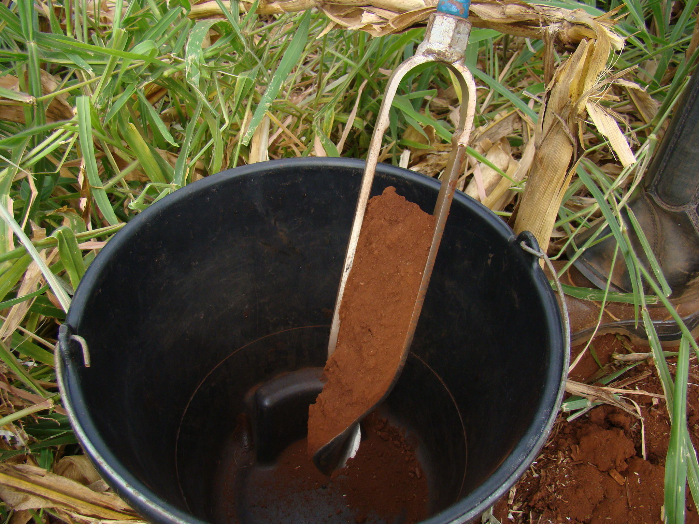
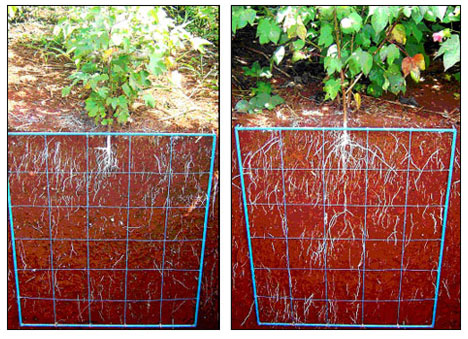

Neste módulo serão apresentados os fatores que afetam a disponibilidade dos nutrientes para as plantas e como estes devem ser manejados, iniciando-se com a correta análise química e física do solo, além de uma adequada correção da acidez, adubação e manejo dos resíduos orgânicos. Será demonstrado como a fertilidade do solo é essencial ao sucesso do sistema.
Acompanhe o vídeo introdutório:
Das áreas utilizadas pela agropecuária no Brasil, um percentual elevado, especialmente o relativo às pastagens, encontra-se em alguma fase de degradação. O principal fator desencadeador da degradação está ligado a problemas de fertilidade do solo [1].
Nesse contexto, o Sistema integração Lavoura-Pecuária-Floresta (ILPF) já está consolidado como uma estratégia para essa recuperação. Por ser um sistema complexo de produção, as recomendações para a correção da fertilidade do solo devem estar adequadas às condições locais do sistema.
A fertilidade do solo está diretamente relacionada com a qualidade deste, que é medida a partir de indicadores. Um bom indicador deve responder de forma sensível ao manejo, estar relacionado com as funções desempenhadas pelo solo, ser compreensível e útil para o agricultor e de forma barata e fácil de medir [2].
Antes da implantação do sistema e durante seu manejo, a fertilidade do solo deve ser observada e manejada de acordo com três principais atributos:
- Atributos físicos do solo;
- Atributos químicos do solo;
- Atributos biológicos do solo.
Antes da implantação do sistema de ILPF, é necessário avaliar se existe alguma restrição ao crescimento das raízes, tanto das culturas anuais, quanto das espécies arbóreas. Para isso é necessário avaliar se há camadas compactadas ou alguma restrição à infiltração de água, como grandes declives ou solos muito argilosos.
Quando a camada compactada está em profundidades não atingidas pelos escarificadores, a subsolagem é recomendada[3]. Outros atributos que devem ser verificados antes e após a implantação do sistema são aqueles que vão influenciar no crescimento das raízes e disponibilidade de água no solo, como: Densidade do solo de partículas, porosidade total, textura do solo, velocidade de infiltração básica e infiltração acumulada de água no solo, estrutura e estabilidade dos agregados, entre outros. Tais atributos podem ser diagnosticados pelo técnico responsável a partir de análises de laboratório de amostras deformadas e indeformadas de solo [4].
As análises químicas são as mais comuns de serem realizadas. São de grande importância para a verificação dos teores dos nutrientes essenciais ao desenvolvimento das plantas e para a verificação de existência de acidez no solo, que é muito comum de ocorrer nos solos do cerrado.
Vários estudos têm mostrado os benefícios nos atributos químicos do solo provocados pela utilização de sistemas de integração:
Antes da implantação do sistema é necessário realizar os procedimentos listados nos subtópicos seguintes:
É uma etapa muito importante para que os resultados das análises químicas estejam de acordo com as características de cada área. Para que as amostras sejam representativas, a área a ser amostrada deverá ser a mais homogênea possível, subdividida em glebas ou talhões. Quanto à profundidade de amostragem, para a maioria das culturas, as amostras simples são coletadas na camada de 0 a 20 cm. Para áreas novas, principalmente quando pretende estabelecer culturas perenes, é indicado amostrar as camadas de 0 a 20 cm e de 20 a 40 cm [6].
 Os solos do cerrado são conhecidos por apresentarem acidez elevada, com altos teores de alumínio (Al) trocável e a deficiência de nutrientes como P, cálcio (Ca) e magnésio (Mg). Dessa forma, para que o potencial agrícola seja atingido, a correção da acidez do solo pela calagem faz-se necessária.
No Sistema ILPF, pratica-se o cultivo de várias culturas de diversos graus de tolerância à acidez do solo. Tendo como base o cultivo de diferentes espécies, a recomendação de calagem deve priorizar a espécie mais exigente. No caso de SPD, após a sua implantação, recomenda-se, a calagem com aplicação de doses anuaismenores, em lugar de doses elevadas a cada três ou quatro anos [7].
De acordo com as análises químicas, caso o produtor queira implantar espécies arbóreas mais exigentes, a prática de aplicação de gesso agrícola tem sido uma boa opção para sanar a deficiência de Ca em profundidade, que geralmente está associada à toxicidade de Alumínio. Por esse fato, o uso do gesso tem sido recomendado junto com o calcário, proporcionando, assim, melhor distribuição do nutriente magnésio presente no calcário no perfil do solo [7].
 Em sistemas que utilizam a sucessão e a rotação de culturas, as recomendações de adubação priorizam a cultura com maior exigência nutricional. No caso de implantação do sistema, deve-se atentar para realizar uma adubação de plantio na espécie florestal, de acordo com a recomendação para a mesma, ou caso não haja alguma recomendação para a região, seguir a recomendação de algum técnico. [8].
Para o manejo da adubação, cabe lembrar que vai depender muito do nível de fertilidade do solo. Em solos de baixa fertilidade, pode ser interessante também a adubação da forrageira semeada na entrelinha de cultivo do milho, principalmente com P e K, para obter uma boa formação do pasto. Em solos onde os níveis de fertilidade enquadram-se com níveis maiores de fertilidade, pode-se efetuar a adubação apenas para a cultura do milho, por exemplo. Deve-se atentar também para a forma de aplicação e a época, adequando melhor ao sistema que for adotado.
Atualmente, a cultura florestal mais utilizada em sistemas de iLPF tem sido o Eucalipto, que, apesar de ser uma espécie de crescimento rápido, necessita de adubações para melhorar seu incremento de madeira e diminuir seu tempo de corte. A maior proporção dos nutrientes requeridos por espécies de rápido crescimento, como as de eucalipto, deve ser suprida até a idade de três anos, logo, a adubação de plantio e as coberturas são essenciais para o desenvolvimento da espécie florestal no sistema [8].
Os benefícios da ILPF sobre os atributos biológicos do solo têm sido mostrados em vários estudos:
- O manejo adequado da fertilidade do sistema ajuda a obter melhores produtividades das lavouras, da forragem e mais produção de madeira em um menor período de tempo, além de diminuir os riscos por erosão.
- Nesse contexto, o uso do sistema de plantio direto (SPD) passou a ser uma das melhores e mais usadas práticas de manejo da fertilidade em áreas de iLPF, visando a melhoria dos atributos físicos, químicos e biológicos do solo, com suas técnicas que visam diminuir a compactação do solo, a manutenção de resíduos culturais na superfície do solo e diversificação de espécies com uso de rotação, sucessão e/ou consorciação de culturas [12].
Ao responder os exercícios, você deve acertar no mínimo 3 questões para avançar para o próximo módulo, caso contrário, a página será recarregada e você deverá tentar responder os exercícios novamente.
Questão 1: Com relação a um bom indicador de qualidade do solo, marque a alternativa incorreta:
PARABÉNS!
Resposta Correta. Um bom indicador de qualidade do solo deve estar
relacionado com as funções desempenhadas por este, incluindo os atributos físicos, químicos e biológicos do solo.
RESPOSTA INCORRETA!
Questão 2: Antes da implantação do sistema de iLPF é necessário avaliar se existe alguma restrição ao crescimento das raízes, tanto das culturas anuais, quanto das espécies arbóreas. Para isso é necessário avaliar se há camadas compactadas ou alguma restrição à infiltração de água, como grandes declives ou solos muito argilosos. Com base nisso, marque a afirmação correta.
PARABÉNS!
Resposta Correta. Em camadas compactadas de solo onde a escarificação não se torna efetiva, é necessário o uso de subsolagem. Recomenda-se realizar a subsolagem antes da implantação do sistema de iLPF, e, após sua implantação, trabalhar com plantas que favoreçam a descompactação do solo, com sistemas radiculares mais fortes e profundos.
RESPOSTA INCORRETA!
Questão 3: Com relação aos atributos químicos do solo, é incorreto afirmar:
PARABÉNS!!
Resposta Correta. Os solos do Cerrado geralmente apresentam acidez elevada, sendo necessária a prática de calagem visando reduzir a acidez e melhorar a disponibilidade de nutrientes, com o fósforo (P), cálcio (Ca) e magnésio (Mg). Deve-se ressaltar que tal prática deve ser orientada por um técnico responsável, a partir da análise química do solo.
RESPOSTA INCORRETA!
Questão 4: São exemplos de benefícios de sistemas de iLPF sobre atributos biológicos do solo, exceto:
PARABÉNS!
Resposta Correta. A disponibilidade de grande quantidade de resíduos orgânicos, em constante renovação pelas árvores e pela pastagem, aumenta os teores de carbono e melhora as condições de agregação e porosidade do solo, além de favorecer a ciclagem de nutrientes e maior fertilidade do solo a longo prazo.
RESPOSTA INCORRETA!
[1] MACEDO, M. C. M. Degradação de pastagens: conceitos, alternativas e métodos de recuperação. Informe Agropecuário. Pastagem, Belo Horizonte, v.Z6, n.226, p.36-42, 2005.
[2] DORAN, J.W. & ZEISS, M.R. Soil health and sustainability; Managing the biotic component of soil quality. Appl. Soil. Ecol.,5:3-11, 2000.
[3] BERGAMIN, A.C. Compactação do solo em sistemas intensivos de produção. Informações Agronômicas, [s.l], v. 164, p. 1-12, dez. 2018.
[4] INGARAMO, O.E. Indicadores físicos de la degradación Del suelo. La Coruña, Universidade da Coruña, 2003. 298p. (Tese de Doutorado).
[5] MACEDO, M.C.M. Integração lavoura e pecuária: o estado da arte e inovações tecnológicas. Rev. Bras. Zootecnia. 38:133-146,2009.
[6] CANTARUTTI, R.B.; ALVAREZ v., V.H.; RIBEIRO, A.C. Amostragem do solo. In: RIBEIRO, A.C.; GUIMARÃES, P.T.G.; ALVAREZ v., V.H. (Ed.). Recomendação para o uso de corretivos e fertilizantes em Minas Gerais: 5ª aproximação. Viçosa, MG: Comissão de Fertilidade do Solo do Estado de Minas Gerais, 1999. p.13-Z0.
[7] ALVAREZ v., V.H.; RIBEIRO, A.C. Calagem. In: RIBEIRO, A.C.; GUIMARÃES, P.T.G.; ALVAREZ V.,V.H. (Ed.). Recomendação para o uso de corretivos e fertilizantes em Minas Gerais: 5a aproximação. Viçosa, MG: Comissão de Fertilidade do Solo do Estado de Minas Gerais, 1999. p.43-60.
[8] Freire, F. M., Coelho, A. M., de BARROS, N. F., de Barros Filho, N. F., & NEVES, J. Manejo da fertilidade do solo no Sistema Integração Lavoura-Pecuária-Floresta. Embrapa Milho e Sorgo-Artigo em periódico indexado (ALICE), 2010.
[9] LOSS, A.; RIBEIRO, E. C.; PEREIRA, M. G.; COSTA, E. M. Atributos físicos e químicos do solo em sistemas de consórcio e sucessão de lavoura, pastagem e silvipastoril em Santa Teresa, ES. Bioscience Journal, v. 30, n. 5, p. 1347-1357, 2014.
[10] ALVARENGA, R.C.; NOCE, A. M. Integração Lavoura-Pecuária. Sete Lagoas: Embrapa Milho e Sorgo, 2005. 16p. (Boletim Técnico, 47).
[11] CERRI, C.C.; MAIA, S.F.M.; GALDOS, M.V.; CERRI, C.E.P.; FEIGL, B.J.; BERNOUX, M. Brazilian greenhouse gas emissions: the importance of agriculture and livestock. Scientia Agricola, v.66, n.6, p.831-843, 2009.
[12] DENARDIN, José Eloir et al. Diretrizes do sistema plantio direto no contexto da agricultura conservacionista. Passo Fundo: Embrapa Trigo, v. 15, 2012.